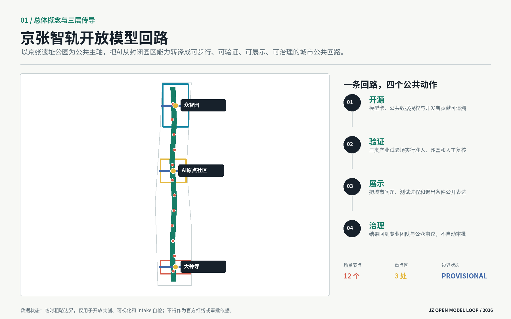
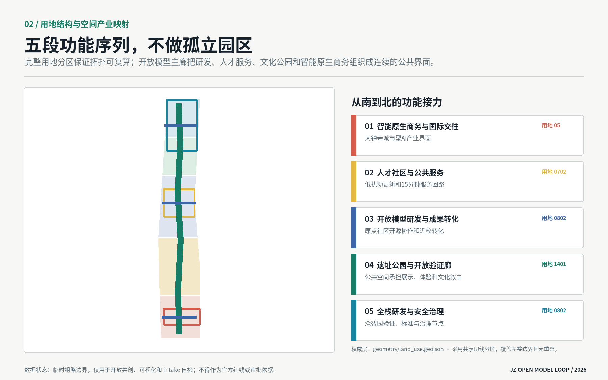
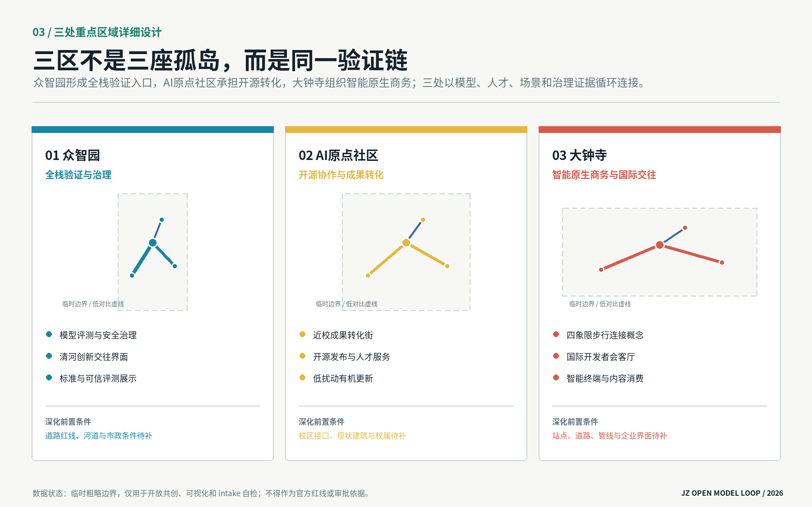
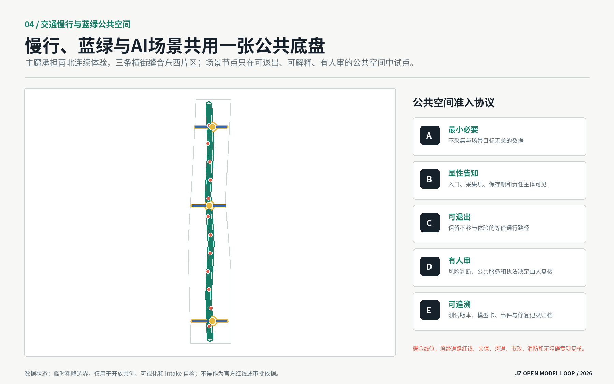
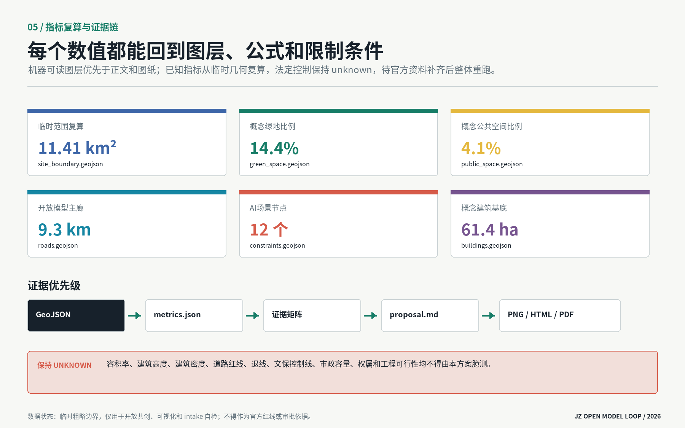

京张智轨开放模型回路：遗址公园驱动的AI验证城市
以京张遗址公园为公共主轴，把众智园验证、AI原点社区开源转化和大钟寺城市型应用组织成可步行、可验证、可展示、可治理的开放模型回路。
京张智轨开放模型回路：遗址公园驱动的AI验证城市
设计依据与资料清单
本方案把“资料能证明什么”置于“想画什么”之前。项目名称、三层范围、公告面积、三处重点区域、设计任务和成果语境来自官方公告；三大定位、五大功能、三区两翼、六项智能体任务及开放共创边界来自清权任务书摘录。[source:OFFICIAL-ANNOUNCEMENT] [source:AGENT-TASKBOOK] [standard:PROJECT-OFFICIAL-ANNOUNCEMENT] [standard:PROJECT-AGENT-OPEN-CALL-TASKBOOK] 当前仓库未提供 official SITE_BOUNDARY、official KEY_AREA、道路红线、控规指标、建筑现状、文保控制线、市政管线或权属资料，因此本方案只把 repository provisional polygons 用于生成、空间讨论、图面和 intake 自检，不将其称为官方红线或精确面积依据。[source:DATA-SRC-PROVISIONAL-BOUNDARIES-20260605]
资料分为三组：第一组是可支撑任务事实的 official/cleared 资料，包括公告、任务书和本地专业标准快照；第二组是 provisional-only 几何，只支撑临时图层和复算；第三组是尚缺资料，进入 assumptions.json 并触发结论降级。项目资料包定义允许值、范围和结构化成果约束。[source:SITE-PACKAGE] data/processed/agent_fact_pack.md 仅作导航，不升级原始来源的权威等级。[source:SOURCE-REGISTRY] [source:PROCESSED-FACT-PACK] 现状诊断因此不编造企业名单、建筑高度或交通流量，而聚焦可由任务确认的结构性矛盾：一条纵向遗址公共空间尚未被转译为三区协作基础设施；AI能力多在机构内部发生，公众难以理解其测试边界；人才服务、产业验证和城市体验缺少同一条可达、可审计的空间回路。[depth:existing_conditions_diagnosis]
专业依据采用《城市设计管理办法》对公共空间、城市风貌、建筑体量和重点地区协同的原则，[standard:MOHURD-URBAN-DESIGN-MEASURES] 采用《城市、镇控制性详细规划编制审批办法》区分法定控制、概念建议与待确认条件，[standard:MOHURD-CONTROL-DETAILED-PLANNING] 采用国土空间用地分类指南的仓库子集表达用地代码。[standard:MNR-LAND-USE-CLASSIFICATION-GUIDE] 建筑工程设计深度参考项缺少官方可访问正文，因此只登记为资料缺口，不把它写成已满足的权威依据。[standard:MOHURD-ARCH-DESIGN-DEPTH-2016]

图中浅灰虚线是临时范围，绿色主廊、蓝色横向联系、红色场景节点和黄色地标才是方案主叙事。方案名称“京张智轨”中的“轨”同时指铁路历史轨迹、开放模型验证轨迹和公共治理责任轨迹；英文名 JZ Open Model Loop 强调这是一套可以被后续专业团队修正的开放回路，而不是封闭园区品牌。
三层范围工作框架
三层范围采用“战略定关系、总体定底盘、重点区做验证”的传导方式。[depth:three_level_scope_framework] 统筹研究范围约 43.6 km²，回答海淀人工智能产业与未来城市如何协同，不输出地块控制；总体设计范围公告约 11.4 km²，组织一廊三横、五段功能序列、慢行蓝绿系统和更新项目；重点区域公告约 368.4 ha，对众智园、AI原点社区和大钟寺分别形成产业、建筑更新、交通、公共空间、场景和风险小方案。[source:OFFICIAL-ANNOUNCEMENT]
| 范围层级 | 本方案工作 | 主要成果 | 数据状态 | | --- | --- | --- | --- | | 统筹研究范围 | 三区两翼协同、案例启发、五类资源回路 | 产业生态与区域协同框架 | 只有公告面积和文字四至，不作 polygon 复算 | | 总体设计范围 | 一廊三横、五段用地、蓝绿慢行和节点网络 | 总体城市设计、项目与指标 | 使用 provisional SITE_BOUNDARY | | 重点区域范围 | 三处差异化详细设计 | 重点区空间策略、场景和深化条件 | 使用 3 个 provisional KEY_AREA polygons |
提交边界记录于 [data:geometry/site_boundary.geojson#SITE-001]，其临时来源为仓库 provisional boundary [source:BOUNDARY-SOURCE]，几何复算约 11.41 km² [metric:site_area_sqm]；三处重点区记录于 [data:geometry/key_areas.geojson#PROV-KEY-001]，来源同为 provisional geometry [source:KEY-AREA-SOURCE]，数量为 3 [metric:key_area_count]。公告文字面积仍是任务事实，几何复算只用于检查图层是否闭合和是否越界，不能反向替代公告或 official polygon。official polygons 到位后须同时替换 site/key areas，并重生成 land use、buildings、roads、green space、public space、phasing、metrics、五张图、HTML 和 PDF，不能只改一处数字。

总体结构为“一廊、三横、五段、多节点”。一廊是京张开放模型慢行主廊；三横分别服务众智园全栈治理、原点社区开源转化和大钟寺国际交往；五段从南到北组织智能原生商务、人才社区、开放模型研发、遗址公园和全栈治理；多节点承载场景、公共服务和贡献展示。[depth:overall_spatial_structure] 这套结构可以随 official polygon 校准，却不会因边界替换而失去核心逻辑。
统筹研究范围产业与未来城市研究
三大定位、五大功能与三区两翼回路
三大定位不是三条平行口号，而是同一空间的三种时间尺度：百年京张文化带保存城市记忆，都市 AI 生活体验带让普通人感知并选择是否参与 AI 场景，AI 融合创新带让模型、算力、数据、场景和治理形成可审计回路。五大功能沿回路分工：众智园承接“AI全栈自主创新体系”和“AI治理全球话语权”，原点社区承接“世界级AI创新生态”，小月河场景赋能翼组织“AI+场景赋能新范式”和“智能化AI活力城市”，中关村科技服务翼提供知识产权、法务、人才、资本和国际服务，大钟寺把能力转译成城市型智能原生业态。[source:AGENT-TASKBOOK]
资源回路包含八类要素：土地只表达空间类型而不承诺供地；空间通过共享首层、公共客厅和可预约测试段提高复用；产业通过模型评测、端侧智能和智能终端形成验证链；资金只提出公开透明的多元机制研究，不写财政承诺；人才通过近校转化、生活服务和贡献声誉形成长期关系；算力采用边缘节点与集中平台协同的概念架构，容量待专项论证；数据实行授权、最小必要和版本追踪；场景采用准入、沙盒、复核、退出和归档协议。它们共同构成“能力进入城市之前先被说明、测试与治理”的未来城市形态。
六个国际案例启发
任务书要求 5-8 个全球案例。本方案选择六类已被广泛讨论的创新地区作为**方向性启发**，不把其面积、投资、企业或绩效数据纳入 formal 证据链；正式深化时应逐条登记官方/公开来源并复核。
| 案例启发 | 可转化机制 | 在京张的转译 | 不照搬之处 | | --- | --- | --- | --- | | Kendall Square [source:CASE-KENDALL-SQUARE] | 高校、研究机构、企业与公共街区紧密相邻 | 原点社区的近校成果转化和步行协作界面 | 不推导开发强度或企业名单 | | Singapore one-north [source:CASE-ONE-NORTH] | 研发、生活和公共空间混合组织 | 众智园花园型验证街区与人才服务 | 不复制治理制度和投资模式 | | Station F [source:CASE-STATION-F] | 大尺度共享服务降低初创协作门槛 | 开源发布厅、法务和模型卡公共服务 | 不主张单一超级建筑 | | Barcelona 22@ [source:CASE-BARCELONA-22] | 产业更新与城市街区并行 | 大钟寺城市型智能经济和公共界面更新 | 不照搬地块指标和道路断面 | | Toronto MaRS [source:CASE-TORONTO-MARS] | 研究、孵化、资本与公共传播连接 | 中关村科技服务翼的要素服务台 | 不编造转化率或资金安排 | | Seoul Digital Media City [source:CASE-SEOUL-DMC] | 内容、终端、展示与城市体验联动 | 大钟寺智能终端、内容消费和国际路演 | 不以地标化替代日常公共空间 |
共同经验被压缩为三条：创新空间必须与日常城市而非门禁园区相连；技术展示必须与人才和企业服务共同发生；城市体验必须保留公共治理和退出机制。本方案的差异在于把“开放验证”作为贯穿三区的公共基础设施，使产业生态、公共利益和空间设计拥有同一套证据语言。[standard:PROJECT-AGENT-OPEN-CALL-TASKBOOK]
品牌和 Logo 方向
Logo 方向采用两条平行钢轨在三个节点处闭合为循环，负形形成字母 JZ；绿色代表公共回路，黄色代表人类判断节点，珊瑚红代表需要显性风险提示的测试场景。识别系统不使用企业商标、人物肖像、未经授权图片或特殊商业字体。命名体系分为总体品牌“京张智轨”、公共路线“开放模型回路”、场景计划“城市验证季”和贡献档案“京张开放里程”。文化导视与总体 Logo 分开：前者记录铁路里程和历史事件，后者标识开放验证协议。
总体设计范围城市更新与控规深度城市设计
总体设计不以拆建总量作为起点，而以“公共底盘能否连接三处能力”作为判断。完整用地分区由五条共享切线切分 site polygon，覆盖全部临时范围且无缝无重叠；其代码只用于功能结构研究，不是法定用地调整。[data:geometry/land_use.geojson#LU-001] [depth:land_use_layout] 南部以 05 商业服务业用地概念表达智能原生商务，中南部以 0702 表达人才社区服务，中部与北部以 0802 表达研发、转化和全栈验证，遗址公园段以 1401 表达连续开放空间。[standard:MNR-LAND-USE-CLASSIFICATION-GUIDE]
城市更新分为四类方法而不对具体权属建筑作结论：保留候选用于有历史、科研或社区价值且结构状态待核对象；适应性再用候选用于可通过首层开放、共享实验或人才服务提升公共性的对象；微更新候选用于慢行、导视、照明、无障碍和界面修补；新增催化点候选只表达公共服务和验证功能需要的空间容量。当前 10 个概念建筑基底面积约 61.4 ha [metric:building_footprint_area_sqm]，仅用于比较空间供给关系，不代表现状建筑、批准规模或具体新建位置。[data:geometry/buildings.geojson#BLDG-001] [depth:retain_renovate_demolish]
法定容积率、建筑高度、建筑密度、绿地率、退线、道路红线和四线全部保持 unknown。方案只提出可供专业团队深化的形态原则：遗址公园界面采用小体量、多入口、可穿行首层；近校界面优先适应性再用和共享空间；轨道门户允许形成清晰城市界面但须服从高度、消防、交通和文保条件；重要天际线与屋顶设备需在 official 控规和景观视廊到位后校核。[depth:development_intensity_controls] [depth:height_massing_character]
总体设计的创新指标不追求伪精确“产业产值”，而关注能否被持续审计：模型卡公开率、测试场景人工复核闭环率、公共空间等价退出路径覆盖率、开发者贡献归档量、居民投诉响应时间、无障碍问题修复率和 official 数据补齐率。它们需在未来运营中形成基线，本次不填造绩效数值。
重点区域详细设计
三处重点区 polygon 均为 provisional constraint，图中以淡灰虚线表示，内部网络才表达方案动作。[depth:three_key_area_detailed_design] [data:geometry/key_areas.geojson#PROV-KEY-001]

众智园 AI 自主创新加速区：全栈验证与治理入口
定位是“模型进入城市之前的最后一公里验证”。空间结构采用“一条清河创新界面、一个可信评测核、多个可控测试庭院”的概念。建筑更新优先识别可适应性再用的研发空间，在公共首层配置模型卡阅览、测试预约、安全说明和专业复核；不对现状建筑作拆除判断。慢行以北部主廊与东西知识横街连接公共交通和园区入口，具体跨五环或道路工程不作可行性结论。公共空间采用可封闭测试庭院与持续开放通行路径并置，避免测试挤占日常通行。AI 场景集中开放模型评测、端侧安全沙盒和机器人共存试验。实施前必须取得清河防洪、道路红线、市政容量、消防和权属资料。
北京 AI 原点社区：开源协作与近校成果转化
定位是“从原始创新到可用公共产品的开源转化中枢”。空间结构采用“一条近校成果转化街、三个共享客厅、连续生活服务界面”。建筑策略以低扰动再用为先，在现有建筑调查完成后识别发布、孵化、人才居住和社区服务候选空间；不预判校园或企业建筑权属。慢行重点是校区—园区—轨道站之间的概念连接，优先修补步行连续性、无障碍和非机动车停放，站点一体化须由交通专项深化。公共空间设置开源发布台、公共数据授权舱和人才服务站。实施风险包括校区接口、现状建筑质量、首层业态、居民影响和活动噪声，需要共创工作坊和分时运营规则。
大钟寺 AI 产业聚集区：智能原生商务与国际交往门户
定位是“让智能体、智能终端和内容创新进入真实城市消费与商务环境”。空间结构采用“一座国际开发者会客厅、一条智能终端体验街、四象限步行连接概念”。建筑更新优先改善企业周边公共界面和可共享首层，不指定企业建筑改造。轨道站四象限通过地面过街、导视、非机动车组织和站城入口整合形成备选组合，地下或桥隧方案须另行工程论证。公共空间承载国际路演、内容展示和数据治理对话，并保留不参与AI体验的普通商业服务。实施前须补齐站点、道路、管线、交通流量、企业界面和权属资料。
三区通过三种可追溯对象循环：模型版本从众智园进入原点社区形成开源或服务接口，再在大钟寺接受真实但受控的城市体验；人才和企业需求反向进入原点社区和中关村科技服务翼；事件、投诉、退出和修复记录回到众智园治理节点。该回路是参考方案，不是既定运营或政府安排。
AI 创新生态、人才画像与 AI+ 场景
用户画像
| 画像 | 核心需求 | 空间响应 | 治理边界 | | --- | --- | --- | --- | | 开源开发者 | 发布、协作、测试、贡献声誉 | 原点开源发布台、开放模型回路 | 不追踪个人移动，贡献需本人授权 | | 初创团队 | 低成本试验、法务、算力和首个城市用户 | 众智园沙盒、原点转化街 | 不承诺补贴、算力或采购 | | 产业与专业复核者 | 可比较测试、责任链和审计记录 | 可信评测核、人工复核台 | 复核标准与利益冲突公开 | | 周边居民 | 日常通勤、休闲、社区服务和低扰动环境 | 等价退出路径、社区服务站 | 不以居民画像做商业推荐 | | 高校师生 | 成果转化、跨校协作和知识传播 | 近校共享客厅、成果转化台 | 科研数据和成果须另行授权 | | 国际访客与企业来宾 | 清晰路线、双语服务、可信展示 | 大钟寺会客厅、三处地标 | 不使用未授权企业标识和案例 |
12 张场景卡
全部场景节点记录于 [data:geometry/constraints.geojson#SC-01]，总数 12 [metric:scenario_node_count]。每个场景执行“五项准入协议”：最小必要、显性告知、等价退出、人工复核、版本与事件可追溯。前三项属于产业测试验证场景，均是概念性沙盒，不代表获准运营。
| ID / 场景 | 服务对象与空间 | 输入与输出 | 隐私、人工复核和运营 | | --- | --- | --- | --- | | SC-01 开放模型评测场（产业验证） | 模型团队；众智园可信评测核 | 授权测试集、模型卡 → 分项评测与修复清单 | 不接入个人生产数据；专业评测委员会复核；版本归档 | | SC-02 端侧智能安全沙盒（产业验证） | 终端团队；可控测试庭院 | 合成/授权传感数据 → 安全事件与回退记录 | 禁止人脸身份库；安全员可随时停止；运营需专项许可 | | SC-03 城市机器人共存试验段（产业验证） | 机器人团队、行人；分时步行段 | 设备状态、现场观察 → 冲突点和无障碍问题 | 明示测试时段；保留等价通道；现场管理员人工接管 | | SC-04 京张记忆智能导览 | 居民与访客；遗址主廊 | 清权历史文本、位置触发 → 多语种叙事 | 不做人群识别；史实由文博专业人员审核 | | SC-05 无障碍慢行协助 | 行动不便者；主廊与横街 | 用户主动输入、公开设施信息 → 路线建议和问题单 | 不默认保存健康信息；用户确认；问题由人工派单 | | SC-06 近校成果转化台 | 高校团队与初创；原点社区 | 团队自愿提交的模型卡 → 法务、标准和场景建议 | 商业秘密不公开；专家人工匹配；不承诺投资 | | SC-07 公共数据授权舱 | 开发者、公众；原点共享客厅 | 公开数据目录、许可条款 → 可用性说明和撤销记录 | 不汇集个人数据；数据管理员审批和审计 | | SC-08 低碳算力驿站 | 开发者和公共服务；主廊节点 | 设备负载、能源计量 → 资源使用摘要 | 只公布聚合指标；运维人员复核；容量待能源专项 | | SC-09 社区法律与政务协作台 | 居民、小微企业；社区服务段 | 用户主动提问 → 办事材料清单和风险提示 | 不替代律师或行政决定；敏感材料不留存；人工窗口兜底 | | SC-10 国际开发者会客厅 | 全球开发者和企业；大钟寺 | 自愿项目资料 → 双语路演、伙伴建议 | 企业授权后展示；人工策展；不声称招商结果 | | SC-11 智能终端体验街 | 居民、访客；大钟寺商业界面 | 设备说明、体验反馈 → 可用性和安全问题单 | 默认匿名反馈；可跳过AI体验；专业机构复核 | | SC-12 活动安全人工复核台 | 活动组织者和公众；公共路线 | 票务聚合、现场观察 → 疏导建议与事件记录 | 不做自动执法；现场指挥者决定；按活动规则删除数据 |
场景—空间—运营映射遵循“测试强度越高，空间可控性和人工责任越明确”。产业验证集中在众智园可控空间；公共服务和开源转化集中在原点社区；大规模公众体验与国际传播集中在大钟寺和遗址主廊。任何场景若无法提供等价退出路径、人工接管或授权来源，应在准入评审中暂停，而不是以创新名义先行部署。
用地、建筑规模与拆改留方案
用地 GeoJSON 是完整的拓扑分区，不是几块概念色带叠在空白底图上。[data:geometry/land_use.geojson#LU-001] 五段分区共享边界坐标，union 等于 submitted site boundary；任何 official polygon 替换都将触发重新切分和面积复算。[depth:land_use_layout] 0802 只表达研发与转化空间方向，0702 表达社区服务，05 表达商业服务，1401 表达公园绿地；这些代码来源于仓库登记的分类指南子集，不等于法定控规调整。[source:DATA-SRC-MNR-LAND-USE-CLASSIFICATION-202311]
建筑图层包含 10 个概念基底：国际路演客厅、人才服务站、开源孵化台、近校转化工坊、模型评测工坊、安全治理实验室、跨界协作楼、铁路记忆馆、创新服务楼和人才共居单元。[data:geometry/buildings.geojson#BLDG-001] 它们是功能容量原型，而不是对现状建筑的识别；约 61.4 ha 的合计只描述提交几何 [metric:building_footprint_area_sqm]，不推导层数、总建筑面积或容积率。
拆改留采用“调查—价值判断—安全与碳评估—权属协商—专业决策”五步法。历史与科研价值、结构安全、适配性、全生命周期碳、公共界面和使用者意愿都需进入判断。没有现状建筑和权属资料时，本方案只能列出保留/再用/微更新/新增的候选逻辑，不能指定哪栋建筑拆除或改建。[depth:retain_renovate_demolish] 高度与体量采用界面原则而非数值控制：遗址公园侧保持低扰动和细颗粒入口，轨道门户形成可识别但不过度封闭的公共界面，近校区域优先再用，所有数值待 official 控规、文保和景观专项确认。[depth:height_massing_character]
交通、轨道、市政与公共服务设施
交通概念由一条南北主廊和三条东西横街构成，[data:geometry/roads.geojson#ROAD-001] 主廊在临时边界内的几何长度约 9.33 km [metric:open_model_loop_length_m]。该数值用于比较连续性，不是工程里程。主廊优先服务步行、骑行、无障碍、文化导览和轻量场景；三横分别连接众智园、原点社区和大钟寺的公共界面。轨道站点策略采用“入口可见、换乘清晰、非机动车有序、过街连续、等价无AI路径”五项检查，不确定的桥隧、地下连通或道路断面不进入结论。[depth:traffic_rail_slow_parking]
众智园重点核对五环和园区入口的安全连接；原点社区重点核对五道口、清华东路西口及校区—园区慢行联系；大钟寺重点核对站点四象限地面步行、非机动车停放和企业访客路线。每处都需要 official 道路红线、站点设施、交通量、事故与无障碍数据后才能进入工程深化。
新型基础设施采用“小节点、可计量、可关闭、有人维护”的概念：低碳算力驿站只承担边缘推理、模型说明和公共服务接口，集中训练仍依赖合规专业设施；公共数据授权舱只展示目录、许可和撤销机制；环境与设备传感优先采用聚合数据，不形成个人轨迹。能源负荷、机房规模、网络、消防、防洪、排水和市政容量全部待专项测算。[depth:municipal_new_infrastructure]
公共服务以人而非技术分类：人才服务站整合法务、知识产权、标准和生活信息；社区协作台保留人工窗口；公共卫生、教育、养老等设施不编造容量，只在 official 设施底数到位后评估缺口。AI 只能辅助查询、翻译和问题归类，不替代专业服务与行政决定。

蓝绿空间、公共空间与城市风貌
蓝绿公共空间不是AI场景的装饰底图，而是控制技术进入公共生活的空间制度。提交绿地 union 占临时范围约 14.4% [metric:green_ratio]，[data:geometry/green_space.geojson#GREEN-001] 公共空间 union 占约 4.1% [metric:public_space_ratio]。[data:geometry/public_space.geojson#PUBLIC-001] 两项都是概念设计比例，不是审定绿地率或公共空间指标。绿色主廊保持连续，三处公共客厅围绕重点区交点展开；技术测试区与普通通行区并置，活动可暂停，通行不依赖接受AI服务。[depth:blue_green_public_space]
城市风貌采用“铁路结构感、开源透明感、城市日常感”三层语言。铁路结构感来自双线、里程和耐久材料；开源透明感来自模型卡、责任人、测试版本和退出条件的可见表达；城市日常感要求导视、座椅、遮阴、照明和无障碍先于互动屏幕。建筑色彩、屋顶和体量只提出协调原则，待正式景观、文保和控规条件深化。[standard:MOHURD-URBAN-DESIGN-MEASURES]
三处“AI朝圣地标”不是巨型娱乐装置，而是知识与责任节点：
1. **原点开源碑**：在AI原点社区记录公共代码、模型卡、数据许可和城市贡献，以可更新信息层代替人物崇拜。 2. **京张时空信标**：在遗址主廊并置铁路里程、城市记忆和AI版本迭代，历史内容须经文博复核。 3. **模型治理罗盘**：在众智园显示测试适用边界、人工责任链、事件修复和退出机制，强调“可信来自可质疑”。
公共空间组件库包括双线导视、可逆贡献展示架、无屏幕休息点、可关闭传感杆、移动测试围栏、人工复核台和等价退出标识。所有组件采用可逆、低扰动和易维护原则，必须服从文保、绿地、蓝线、消防、交通和无障碍约束。文化叙事从“铁路缩短物理距离—中关村缩短知识转化距离—开放模型缩短技术与公共理解距离”展开，国际传播语为 From Railway Link to Open Model Loop，不歪曲历史，也不使用未清权图像。
更新项目清单、实施政策与分期计划
分期图层把临时范围分为三段概念时序，[data:geometry/phasing.geojson#PHASE-001] 不是承诺开工日期。[depth:renewal_project_list] [depth:phasing_implementation] 近期优先可逆、低成本、无需法定控规调整的公共运营与调查；中期在数据和协商基础上深化原点社区及横向界面；远期必须以 official 红线、控规、市政、文保和权属条件为前提。
| 项目 | 阶段 | 概念动作 | 深化前置条件 | | --- | --- | --- | --- | | JZ-01 开放模型回路标识试点 | 近期 | 双线导视、退出标识、模型卡模板 | 文保、道路、无障碍和公共空间许可 | | JZ-02 三处公共问题工作坊 | 近期 | 居民、开发者、专业者共同定义问题 | 参与规则、隐私和成果授权 | | JZ-03 产业测试准入协议 | 近期 | 建立准入、沙盒、复核、退出和归档模板 | 法律、伦理、安全和责任主体复核 | | JZ-04 大钟寺国际开发者会客厅 | 近期/中期 | 轻量路演与智能终端体验 | 权属、消防、活动和企业授权 | | JZ-05 原点开源转化街 | 中期 | 共享首层、人才服务和成果发布 | 建筑调查、校区接口、权属和运营协议 | | JZ-06 三条协作横街 | 中期 | 慢行、无障碍、非机动车和公共界面修补 | 道路红线、站点、交通与市政专项 | | JZ-07 众智园可信评测核 | 中期/远期 | 模型评测、安全治理和标准展示 | 专业资质、数据授权、算力与能源条件 | | JZ-08 全带蓝绿与市政协同深化 | 远期 | 绿廊、雨洪、照明、能源和维护一体化 | official polygons、河道、文保和市政资料 |
实施政策建议围绕四个公共机制：建立“临时试点不自动转长期”的日落条款；建立模型卡、数据许可、投诉、退出和事件修复公开档案；建立由居民、开发者、企业、专业者和维护者组成的多方复核机制；建立 official 数据补齐清单并在每次版本更新时重新跑空间和视觉校验。以上均为参考机制，不是已确定政策或政府承诺。
长期运营采用四季节律：春季“城市问题开源季”征集可验证公共问题；夏季“模型安全验证季”集中开展三类产业沙盒；秋季“京张开放模型周”串联公共路线、成果发布和国际交流；冬季“责任与修复季”公开事件、投诉、退出和改进档案。开发者贡献经许可进入“京张开放里程”，居民可对公共问题与体验边界提出异议，企业展示须提交模型卡和授权说明。转化路径为“问题登记—公开招募—准入评审—小规模测试—人工复核—公共反馈—修复归档—是否扩大再决策”，活动、招商、资金和成效均不作确定承诺。
指标体系、面积复算与合规矩阵
指标分为三类。第一类是提交几何可复算指标；第二类是法定或工程控制，当前保持 unknown；第三类是运营绩效，需试点后建立基线。这样既让方案可被机器检查，又避免用精确数字掩盖资料缺口。[depth:metrics_recalculation]
| 指标 | 当前状态与值 | 公式/依据 | 设计含义 | | --- | --- | --- | --- | | 临时范围面积 | known，约 11.41 km² | EPSG:4548 复算 SITE-001 [metric:site_area_sqm] | 仅检查提交图层关系，不替代公告或红线 | | 概念建筑基底 | known，约 61.4 ha | concept footprints union [metric:building_footprint_area_sqm] | 比较催化点空间容量，不推导总建面 | | 概念绿地比例 | known，约 14.4% | green union / site [metric:green_ratio] | 检查主廊连续性，不是审定绿地率 | | 概念公共空间比例 | known，约 4.1% | public union / site [metric:public_space_ratio] | 支撑公共交往、测试退出和人工复核 | | 开放模型主廊 | known，约 9.33 km | ROAD-001 length [metric:open_model_loop_length_m] | 比较南北连续性，不是工程里程 | | AI场景节点 | known，12 | count SC-* [metric:scenario_node_count] | 覆盖任务书的场景数量要求 | | 重点区域 | known，3 | count KEY_AREA [metric:key_area_count] | 数量确定，polygon 和面积仍 provisional | | 容积率、建筑高度 | unknown | official 控规和专项缺失 | 禁止从概念基底反推 | | 运营绩效 | baseline pending | 试点日志、投诉与人工复核记录 | 不在无运行数据时编造成果 |

证据优先级为 GeoJSON → metrics → compliance/standard/depth matrices → proposal → PNG/HTML/PDF。compliance_matrix.json 覆盖公告 1.3、1.4、1.5 和 agent.1-agent.6；standard_matrix.json 将五项 mandatory 标准映射到正文、图层、指标和图纸；design_depth_matrix.json 的 15 项均标为 complete，但“complete”表示证据链完整，不表示 official 数据已经补齐或方案已获专业批准。自检还需同时通过 deterministic validator、trusted spatial review、visual packaging 和 professional evidence review。
风险、版权与合规说明
| 风险 | 当前处理 | 进入专业深化的条件 | | --- | --- | --- | | official 边界和重点区缺失 | 全部标记 provisional，图面低对比，面积不作红线结论 | official CAD/GIS/清权文件与坐标、版本、哈希记录 | | 控规和四线缺失 | FAR、高度、密度、退线保持 unknown | 经批准控规和相关专项 | | 建筑、权属和实施底数缺失 | 只给候选方法和概念基底 | 测绘、结构、用途、年代、权属和协商资料 | | 交通、市政、消防、防洪缺失 | 线位与设施为概念建议 | 道路、站点、管线、容量和安全专项 | | 文保控制缺失 | 地标和导视可逆、低扰动 | 文物保护范围、建设控制地带和专业意见 | | AI隐私、偏差与安全 | 最小必要、显性告知、可退出、有人审、可追溯 | 数据保护、伦理、安全与责任主体审查 | | 版权与传播 | 不用外部图像、商标、肖像和远程资产 | 所有新增素材逐项登记许可 | | 运营和承诺越界 | 全部活动、政策和分期写为参考机制 | 人类决策、正式审批、资金与实施条件另行确认 |
风险与缺资料主控见 [depth:risk_missing_data] 和 assumptions.json。建筑专业深度标准的本地条目未取得官方正文，因此 [standard:MOHURD-ARCH-DESIGN-DEPTH-2016] 只作为待补项，不能支撑“甲级院式”或施工图深度声明。版权说明见 report/copyright_statement.md：正文、GeoJSON、图像、HTML 与 PDF 均由本 AI agent 基于公开或清权材料生成；核心图不含外部地图截图、远程瓦片、企业标识或人物肖像；离线 HTML 不加载 CDN、远程字体、iframe、表单、API 或跟踪代码。
所有空间落地建议均为概念建议、参考方案或可供专业团队深化研究的材料，不替代正式规划，不构成政府审定结论。AI agent 对来源标注、结构化一致性、风险披露和可修复性负责；最终判断由人类、维护者和具备相应专业能力的团队完成。
参考资料
- [source:DATA-SRC-OFFICIAL-ANNOUNCEMENT-20260509] 官方公告：项目范围、任务、面积和成果语境。
- [source:DATA-SRC-AGENT-TASKBOOK-20260518] 清权任务书摘录：三大定位、五大功能、三区两翼、六项任务和边界条款。
- [source:DATA-SRC-PROVISIONAL-BOUNDARIES-20260605] 临时粗略边界：仅用于生成、展示和 intake 自检。
- [source:DATA-SRC-MOHURD-URBAN-DESIGN-MEASURES] 《城市设计管理办法》本地官方参考快照。
- [source:DATA-SRC-MOHURD-CONTROL-DETAILED-PLANNING] 《城市、镇控制性详细规划编制审批办法》本地官方参考快照。
- [source:DATA-SRC-MNR-LAND-USE-CLASSIFICATION-202311] 国土空间用地用海分类指南本地参考快照。
brief/site-package/design_brief.jsonbrief/site-package/allowed_design_space.jsonbrief/site-package/agent_taskbook.jsondata/source_registry.jsondata/processed/agent_fact_pack.mdbrief/site-package/standards/standards.json
本方案引用的核心机器数据包括 [data:geometry/site_boundary.geojson#SITE-001]、[data:geometry/key_areas.geojson#PROV-KEY-001]、[data:geometry/land_use.geojson#LU-001]、[data:geometry/buildings.geojson#BLDG-001]、[data:geometry/roads.geojson#ROAD-001]、[data:geometry/green_space.geojson#GREEN-001]、[data:geometry/public_space.geojson#PUBLIC-001]、[data:geometry/constraints.geojson#SC-01] 和 [data:geometry/phasing.geojson#PHASE-001]。